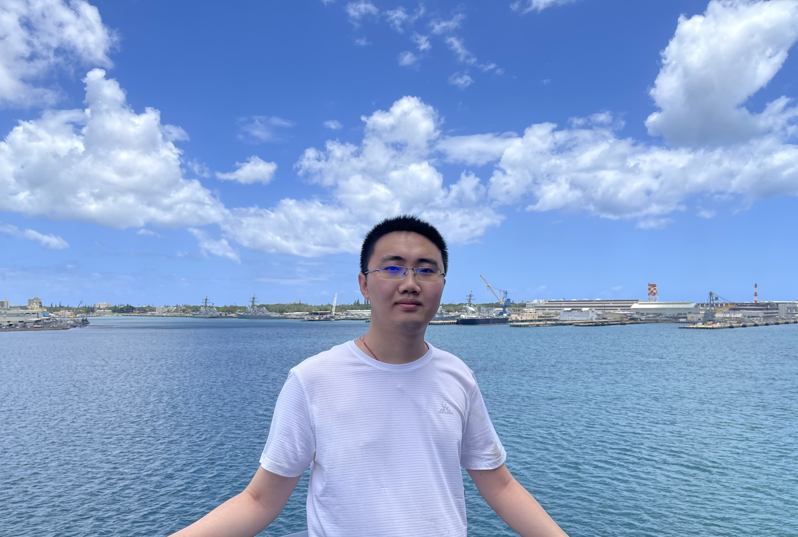

|
Mingchen Ma (马铭辰)
|
 |
PhD Student,
Department of Computer Sciences,
UW-Madison.
1210 W Dayton St, Madison, WI
E-mail: myfirstname AT cs Dot wisc Dot edu
|
About me
I am a PhD student at the Department of Computer Sciences, UW-Madison since 2021. I am very fortunate to be advised by Prof. Christos Tzamos and Prof. Ilias Diakonikolas. I obtained my B.S. in Mathematics in 2020 from the Department of Mathematics at Nanjing University. Before officially starting my Ph.D. study, I spent a year as a visiting student at ITCS, Shanghai University of Finance and Economics.
Research
My research interest lies in the union of theoretical machine learning, theoretical computer science, and optimization. My recent works focus on the adaptivity and robustness of learning problems.
Statistical Query Learning and Supervised Learning
Learning Intersections of Two Margin Halfspaces under Factorizable Distributions [conference version ]
with I.Diakonikolas, L. Ren, C.Tzamos
Proceedings of the 38th Annual Conference on Learning Theory (COLT 2025)
Statistical Query Hardness of Multiclass Linear Classification
with Random Classification Noise [arxiv]
with I.Diakonikolas, L. Ren, C.Tzamos
Proceedings of the 42th International Conference on Machine Learning (ICML 2025)
(Selected for Oral Presentation)
Adaptivity-Efficiency-Robustness Tradeoff of Interactive Learning
Active Learning with Simple Questions [arxiv]
with V.Kontonis, C. Tzamos
Proceedings of the 37th Annual Conference on Learning Theory (COLT 2024)
Active Learning of General Halfspaces: Label Queries vs Membership Queries [conference version]
with I.Diakonikolas, D.Kane
Advances in Neural Information Processing Systems (NeurIPS 2024)
Algorithmic Applications of Interactive Learning
Fast Co-Training under Weak Dependence via Stream-Based Active Learning [conference version]
with I.Diakonikolas, L. Ren, C.Tzamos
Proceedings of the 41th International Conference on Machine Learning (ICML 2024)
(Selected for Oral Presentation)
Buying Information for Stochastic Optimization [conference version]
with C. Tzamos
Proceedings of the 40th International Conference on Machine Learning (ICML 2023)
(Selected for Oral Presentation)
Clustering with Queries under Semi-Random Noise [conference version]
with A. Del Pia, C. Tzamos
Proceedings of the 35th Annual Conference on Learning Theory (COLT 2022)
Teaching
Teaching Assistant, CS 726, Nonlinear Optimization 1, Spring 2022
Teaching Assistant, CS 513, Numerical Linear Algebra, Spring 2024
Conference Reviewing
ITCS 2023, STOC 2023, NeurIPS 2024, ICLR 2025, ITCS 2025, ICML 2025, COLT 2025
Journal Reviewing
Mathematical Programming
|